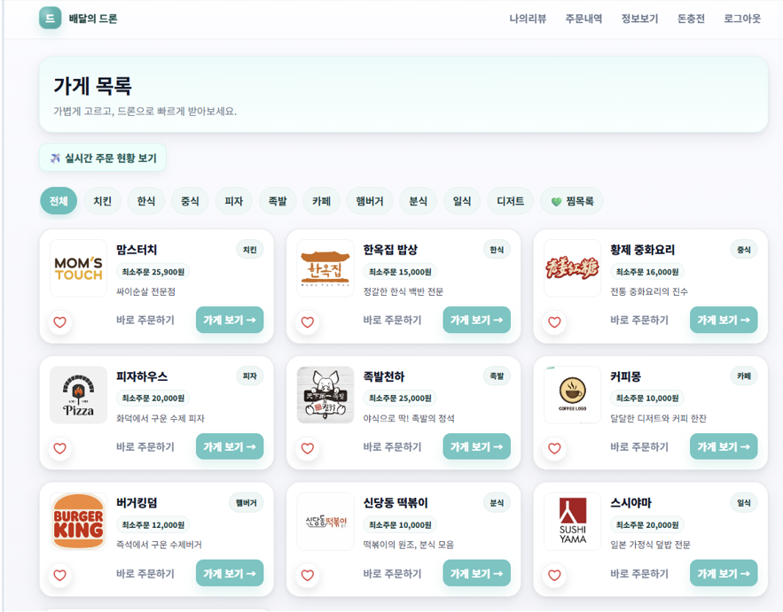

Transaction Boundary
DB 저장과 외부 통신 분리
트랜잭션 책임을 줄이고 외부 서버 지연을 비동기 파이프라인에서 흡수했습니다.
가상 드론 기반 음식 배달 웹 서비스입니다. 다중 사용자 환경에서 발생하는 주문 누락과 지연 문제를 로그 추적과 처리 흐름 분석으로 식별하고 개선했습니다.
GitHub Repository
@Transactional 내부에 외부 Python 서버 통신이 포함되어 Blocking I/O 동안 DB 커넥션을 장기 점유했습니다. 주문 요청은 DB 저장을 빠르게 끝내고, 외부 서버 전송은 BlockingQueue 기반 워커 스레드로 분리했습니다.
트랜잭션 책임을 줄이고 외부 서버 지연을 비동기 파이프라인에서 흡수했습니다.
동시 주문 충돌을 재현하고 상품 ID 기준 락 순서를 고정해 데드락 재발을 방지했습니다.
